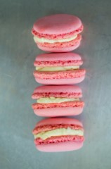
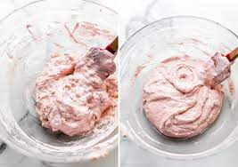
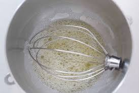
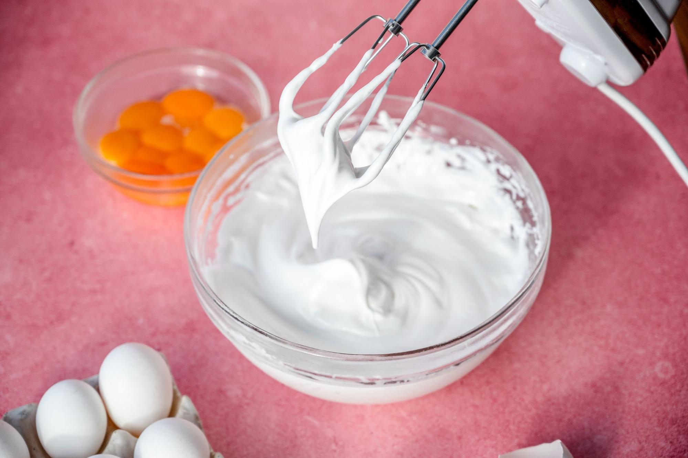
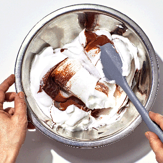
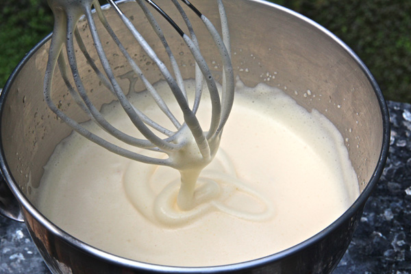

As the scent of almond and sugar fills the air, memories of my grandmother's kitchen flood my mind, transporting me back to cherished moments spent baking together. Macarons, delicate yet decadent, hold a special place in my heart, evoking the warmth and love of her kitchen. I can still picture her hands expertly folding the almond flour into glossy meringue, a technique passed down through generations. Each batch was a labor of love, infused with stories of her own childhood and family traditions. Today, as I embark on my own macaron-making journey, I carry her legacy with me, honoring her timeless recipe and the joy it continues to bring to our family gatherings

Equipment:
Ingredients:
Directions:





Fillings:
Almond-Raspberry
Flavor with almond extract
Fill with seedless raspberry jam (about ¾ cup)
Mint-White Chocolate
Flavor with mint extract
For the filling, microwave 3 ounces chopped white chocolate, 2 tablespoons heavy cream and 1 tablespoon butter in 30-second intervals, stirring, until smooth
Stir in 1/4 teaspoon mint extract and 1 drop mint green gel food coloring.
Blueberry-Cheesecake
Flavor with vanilla extract
For the filling, mix 4 ounces softened cream cheese and 3 tablespoons blueberry jam.